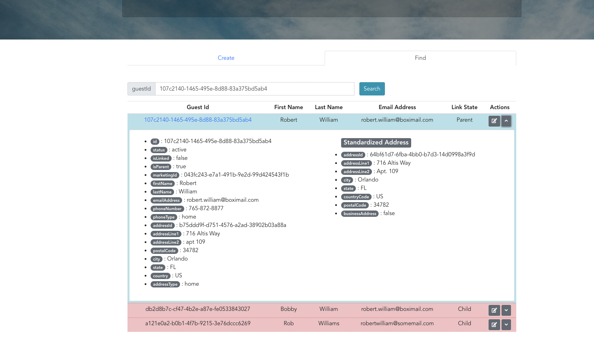

Match & Link Processor
Prepared by Kareem Aljabr
Introduction
At Universal Orlando Resort guests can have either a profile or an account.
Profile:
- Buy a ticket and checkout as a guest
- Book a hotel room and checkout as a guest
- Buy a ticket at the Theme Park gate
- Taking a survey in the park
- Sign up for emails
Introduction Count.
Account:
- Sign up using the website or mobile
- Checkout as a guest and at the end provide a password to create an account
- Ticket confirmation email and click on the link to create an account
What is Match & Link?
- Asynchronous process
- Consumes Kafka events produced by guest profile service.
- When a profile is created or updated it searches for a matching profile.
- If a matching profile is found, both profiles will be linked.
Core Concept - Scenario 1
Core Concept - Scenario 2
Core Concept - Scenario 3
History ⏳
Existing Node.js microservice, ms-guest, used to proxy SOAP requests to an IBM MDM AE.
IBM InfoSphere MDM AE : IBM InfoSphere Master Data Management Advanced Edition
Issues Part #1
- written by a team of developers from IBM, their contracts were terminated.
- Lack of documentation.
- Difficult to maintain due to low unit test coverage. And lack of integration tests.
- Loose API contracts
- Multiple endpoints with the same functionality.
- DB models CRUD operations endpoints exposed.
Issues Part #2
- Many performance issues in production.
- Synchronous Match & Merge
- Poor design. An unregistered guest profile is created whenever you land on the website.
- Resulted in creating 100 millions of ghost profiles.
- IBM support contract is too expensive.
Existing Solution Revamp
Component Diagram Stages
- Existing Architecture
- Suggested Architecture
- Proxy existing service to new service
- Introducing Kafka
Existing Architecture
Suggested Architecture
Proxy to New Service
Component Diagram - Kafka
Sequence Diagram - Initial

Guests Dashboard
I created a UI Dashboard to allow both QA and Business teams to test the Match & Link process.
Create Guest Profile

Validate Match & Link
Validate Match & Link Continued

Validate Match & Link Continued

Validate Match & Link Continued

Validate Match & Link Continued

Validate Match & Link Continued

Validate Match & Link Continued